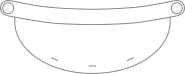
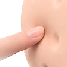
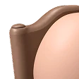

CURO 키트 안에
무엇이 들어있을까?
제품을 눌러 확인해보세요
아이의 첫 연습을 위한
안전한 설계
아이의 복부에 안정적으로 착용되는 구조와
주사 연습을 위한 고정 장치를 적용했어요
아이의 복부에 안정적으로 착용되는 구조와
주사 연습을 위한 고정 장치를 적용했어요
아이의 복부에 안정적으로 착용되는 구조와
주사 연습을 위한 고정 장치를 적용했어요
아이가 품에 안고 편안하게 연습할 수 있도록
움직이는 관절을 적용해 자세를 자유롭게 조절할 수 있어요.



#01
부드러운 촉감으로 구현한,
실리콘 연습 패드
부드러운 실리콘 소재를 적용해 실제 사용 상황에
가까운 촉감으로 반복해서 연습할 수 있도록 제작했어요.



안심하고 사용할 수 있도록
이런 부분을 고려했어요

- 복부 쿠션 패드로 배에 닿는 부분을 부드럽게 만들었어요
- 벨트 커버를 쉽게 분리해 깨끗하게 세척하고 관리해요
- 스트랩 길이를 조절해 아이의 체형에 맞게 착용해요
- 커버의 결합 방향을 바꿔 왼손잡이도 편리하게 사용해요
- 바늘 보호판으로 바늘이 깊이 들어가지 않도록 했어요
제품 사용 방법
 Step 1
Step 1포장을 열고 벨트의 구성품이 모두 들어 있는지
확인해 주세요. Step 2
Step 2벨트 본체 연결부에 패브릭 커버를 방향에
맞게 끼워 주세요. Step 3
Step 3연결부에 원기둥 고정 부품을 끼운 후 뚜껑을 닫아
주세요. Step 4
Step 4벨트를 아이의 복부에 착용시키고 스트랩 길이를
알맞게 조절해 주세요. Step 5
Step 5벨트 본체의 전원 연결부에 5V 전원 케이블을
꽂아 주세요. Step 6
Step 6CURO 학습 콘텐츠의 안내에 따라 아이와 함께
주사 연습을 시작해 주세요.
사용 전 주의사항
- 아이가 안전하게 연습할 수 있도록 보호자가 곁에서 함께 지도해 주세요.
- 고장을 방지하기 위해 전원 연결부와 전자 부품에 물이 닿지 않도록 해주세요.
- 세척 전에는 반드시 전원을 분리하고, 분리한 패브릭 커버만 세탁해 주세요.
제품 정보
| 제품명 | CURO 주사 연습 벨트 |
|---|---|
| 품목명 | 어린이용 주사 연습 보조기기 |
| 보관방법 | 습기를 피해 서늘하고 건조한 곳에 보관 |
| 소재 | 실리콘, 플라스틱, 패브릭, 3D 에어 메쉬, 스펀지 |
| 색상 및 사이즈 | 브라운, 60x40x800 |
| 판매자명 | CURO |
| 제조국 | 한국 |
| 제조사 | 제품 내 별도 표기 |
취급 상 주의사항
 손세탁
손세탁 기계 세탁 금지
기계 세탁 금지 표백 금지
표백 금지 고온 세탁 금지
고온 세탁 금지 다림질 금지
다림질 금지 그늘 건조
그늘 건조
안심하고 사용할 수 있도록
이런 부분을 고려했어요

- 50cm 크기로 제작해 아이가 품에 안고 편안하게 연습해요.
- 플라스틱 안전 관절로 팔을 자유롭게 움직일 수 있어요.
- 실리콘 패드를 분리해 간편하게 세척할 수 있어요.
- 인형을 별도로 세탁해 위생적으로 관리할 수 있어요.
- 부드러운 실리콘 패드로 반복적인 주사 연습이 가능해요.
제품 사용 방법
 Step 1
Step 1포장을 열고 주사 연습 인형의 구성품이 모두 들어 있는지 확인해 주세요.
 Step 2
Step 2CURO 학습 콘텐츠의 안내에 따라 인형을 안고 주사 연습을 시작해 주세요.
 Step 3
Step 3연습이 끝나면 실리콘 패드를 깨끗이 닦고 충분히 건조한 후 보관해 주세요.
사용 전 주의사항
- 아이가 안전하게 연습할 수 있도록 보호자가 곁에서 함께 지도해 주세요.
- 세탁 전 실리콘 패드를 분리하고, 인형 본체는 세탁 안내에 따라 관리해 주세요.
제품 정보
| 제품명 | CURO 주사 연습 인형 |
|---|---|
| 품목명 | 교육용 주사 연습 인형 |
| 보관방법 | 직사광선을 피해 건조한 곳에 보관 |
| 소재 | 패브릭, 솜, 실리콘, 플라스틱 |
| 색상 및 사이즈 | 오렌지 23×50cm |
| 판매자명 | CURO |
| 제조국 | 한국 |
| 제조사 | 제품 내 별도 표기 |
취급 상 주의사항
- 손세탁
- 기계 세탁 금지
- 표백 금지
- 고온 세탁 금지
- 다림질 금지
- 그늘 건조
안심하고 사용할 수 있도록
이런 부분을 고려했어요

- 바늘이 보이지 않도록 설계해 두려움을 줄였어요.
- 잡기 쉬운 그립으로 편안하게 사용할 수 있어요.
- 실제 인슐린 펜에 결합해 연습할 수 있어요.
- 분리형 구조로 손쉽게 분리하고 위생적으로 관리해요.
- 보호용 뚜껑으로 깔끔하게 보관할 수 있어요.
제품 사용 방법
 Step 1
Step 1포장을 열고 주사보조캡의 구성품이 모두 들어 있는지 확인해 주세요.
 Step 2
Step 2인슐린 펜에 상단 커버를 아래에서 위로 밀어 올려 올바른 위치에 끼워 주세요.
 Step 3
Step 3하단 커버를 딸깍 소리가 날 때까지 밀어 올려 결합해 주세요.
 Step 4
Step 4보호자가 인슐린 펜에 바늘을 장착하고, 바늘 보호캡을 제거한 후 필요한 부분을 소독해 주세요.
 Step 5
Step 5바늘 가림 부품을 결합하고 CURO 학습 콘텐츠에 따라 연습해 주세요.
 Step 6
Step 6연습이 끝나면 주사캡을 깨끗이 닦아 소독하고, 충분히 건조한 뒤 보호용 뚜껑을 닫아 보관해 주세요.
사용 전 주의사항
- 아이가 안전하게 연습할 수 있도록 보호자가 곁에서 함께 지도해 주세요.
- 사용 전 주사캡의 결합 상태와 파손 여부를 확인해 주세요.
- 사용 후에는 주사캡을 깨끗하게 관리하고 보호용 뚜껑을 닫아 보관해 주세요.
제품 정보
| 제품명 | CURO 주사 보조 캡 |
|---|---|
| 품목명 | 교육용 주사 연습 보조 도구 |
| 보관방법 | 습기를 피해 서늘하고 건조한 곳에 보관 |
| 소재 | 플라스틱, 실리콘, 네오디뮴 자석 |
| 색상 및 사이즈 | 베이지, 34x34x162 |
| 판매자명 | CURO |
| 제조국 | 한국 |
| 제조사 | 제품 내 별도 표기 |
안심하고 사용할 수 있도록
이런 부분을 고려했어요

- 90° 각도를 일정하게 유지하도록 설계했어요.
- 하단 실리콘으로 미끄러짐을 줄여 안정적으로 사용할 수 있어요.
- 주사 펜에 간편하게 결합할 수 있도록 제작했어요.
- 올바른 주사 자세를 반복해서 연습할 수 있어요.
제품 사용 방법
 Step 1
Step 1포장을 열고 주사 각도 가이드의 구성품이 모두 들어 있는지 확인해 주세요.
 Step 2
Step 2주사 펜에 주사 각도 가이드를 올바른 방향으로 결합해 주세요.
 Step 3
Step 3CURO 학습 콘텐츠의 안내에 따라 주사 연습을 시작해 주세요.
사용 전 주의사항
- 보호자의 지도 아래 올바른 주사 각도와 사용 방법을 익혀 주세요.
- 사용 전 고정기의 결합 상태와 파손 여부를 확인해 주세요.
제품 정보
| 제품명 | CURO 주사 각도 가이드 |
|---|---|
| 품목명 | 주사 각도 보조 기구 |
| 보관방법 | 직사광선을 피해 건조한 곳에 보관 |
| 소재 | 플라스틱, 실리콘 |
| 색상 및 사이즈 | 베이지, 42×42×25 |
| 판매자명 | CURO |
| 제조국 | 한국 |
| 제조사 | 제품 내 별도 표기 |
안심하고 사용할 수 있도록
이런 부분을 고려했어요

- 아이의 눈높이에 맞춰 주사 이야기를 쉽게 풀어냈어요.
- 따뜻한 색감과 친근한 그림으로 몰입감을 높였어요.
- 이야기를 통해 주사 연습의 과정을 자연스럽게 익혀요.
- 동화 애니메이션과 연계해 더욱 생생하게 즐길 수 있어요.
제품 정보
| 제품명 | 콩이와 큐로 가디언즈 동화책 |
|---|---|
| 품목명 | 어린이 주사 교육용 그림책 |
| 보관방법 | 직사광선을 피해 건조한 곳에 보관 |
| 소재 | 종이 |
| 색상 및 사이즈 | 컬러, 200x200 |
| 페이지 수 | 34페이지 |
| 판매자명 | CURO |
| 제조국 | 한국 |
| 제조사 | 제품 내 별도 표기 |